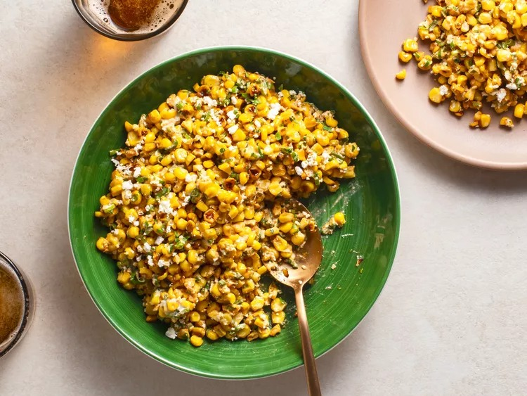

Esquites

Description
This is one of my favorite recipes. In true food blog form, I'll share a personal story before going into the recipe! When my husband and I were first dating long distance, we were both cooking one afternoon. This was a rare occasion because I never cook. Without discussing with each other, we found we were both making esquites!
Ingredients
- 2 tablespoons (30ml) vegetable oil
- 4 ears fresh corn
- Kosher salt
- 2 oz Cotija cheese
- 1/2 cup scallions
- 1/2 cup cilantro
- 1 jalapeno
- 1-2 cloves of garlic
- 2 tbsp mayonnaise
- 1 tsp fresh lime juice
- Chile powder to taste
Steps
- Heat oil in a large skillet and add the corn. Cook until charred.
- Transer corn to a large bowl.
- Add all remaining ingredients to the bowl and toss to combine
- Season with salt and chili powder as needed.
- Eat immediately and enjoy!
Credits
Recipe and images from SeriousEats Mexican Street Corn Salad (Esquites) by J. Kenji Lopez-Alt.